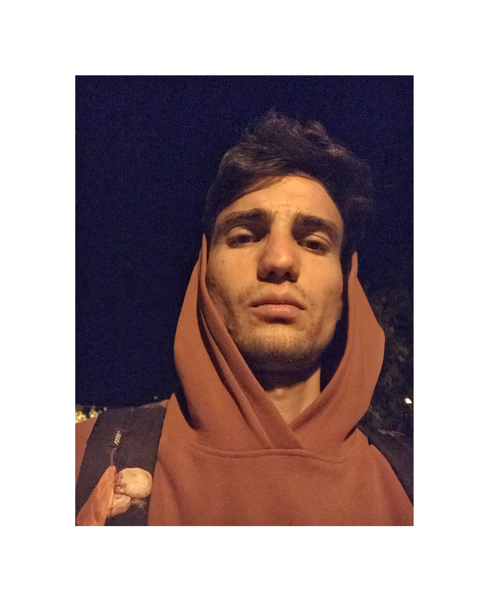

Rovshen Hojayev CV
Personal Information

Date of Birth: 16 February 1995Nationality: TurkmenLocation: TurkemnistanLanguages: Turkmen, English, Turkish, RussianContact Information: rovshenhojayev1@gmail.com
Summary
I'm an aspiring web developer with a background that blends hands-on experience and customer-focused roles. After working as a salesman and spending time as a deckhand on yachts, I developed a passion for technology and coding. Now, I'm dedicated to learning web development and building a career in tech. I bring a unique perspective to the table, combining my practical skills and strong work ethic with a drive to create impactful digital solutions. I'm eager to continue growing and contributing to the ever-evolving world of web development.
Education
Associate's Degree in Business Management
Manisa Celal Bayar University
STCW
Xone Superyacth Academy
Work Experience
Salesman
Turkcell Superonline Internet
Dates of Employment
Engaged customers in sales and promotional activities.
Provided excellent customer service, addressing client needs and concerns.
Assisted in achieving sales targets and contributed to the growth of the customer base.
Salesman
General Chemistry
Dates of Employment
Conducted sales presentations and negotiations with clients.
Developed and maintained strong client relationships.
Collaborated with the sales team to achieve company goals.
Salesman & Coordinator
Venividi Organisation
Dates of Employment
Managed sales processes and coordinated events.
Liaised with clients to ensure smooth execution of events.
Liaised with clients to ensure smooth execution of events.
Deckhand
Begum M/Y 38m
Dates of Employment
Assisted with the maintenance and operation of the yacht.
Supported crew members with daily tasks and ensured the yacht's readiness.
Provided excellent service to guests on board.
Skills
Web Development: HTML, CSS, JavaScript (in progress)Sales & Communication: Proven ability to engage customers, close deals, and maintain strong client relationships.Problem-Solving: Skilled at identifying customer needs and providing effective solutions.Team Coordination: Experience in managing teams, coordinating events, and ensuring smooth operations.Attention to Detail: Developed through hands-on work as a deckhand, ensuring high standards in all tasks.Customer Service: Strong background in delivering exceptional service in both sales and maritime settings.
Connect with me on Github | Email